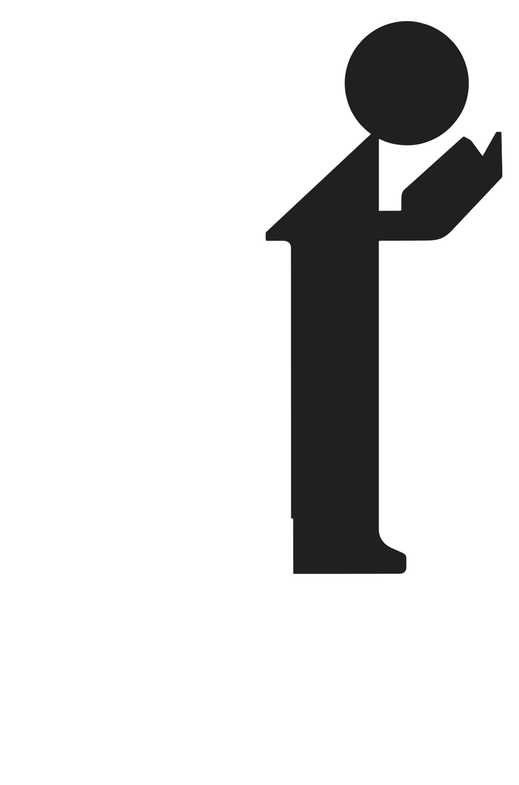
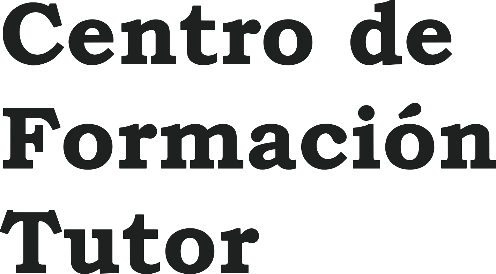
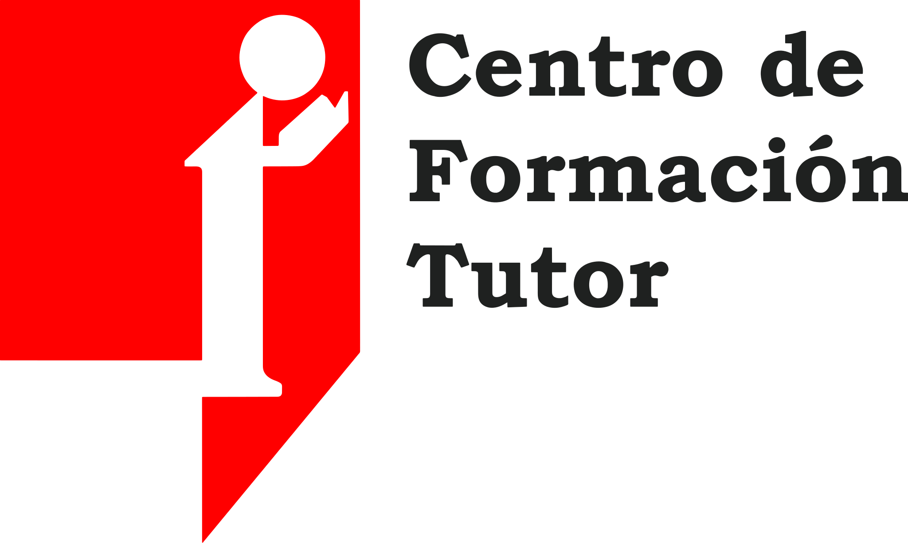
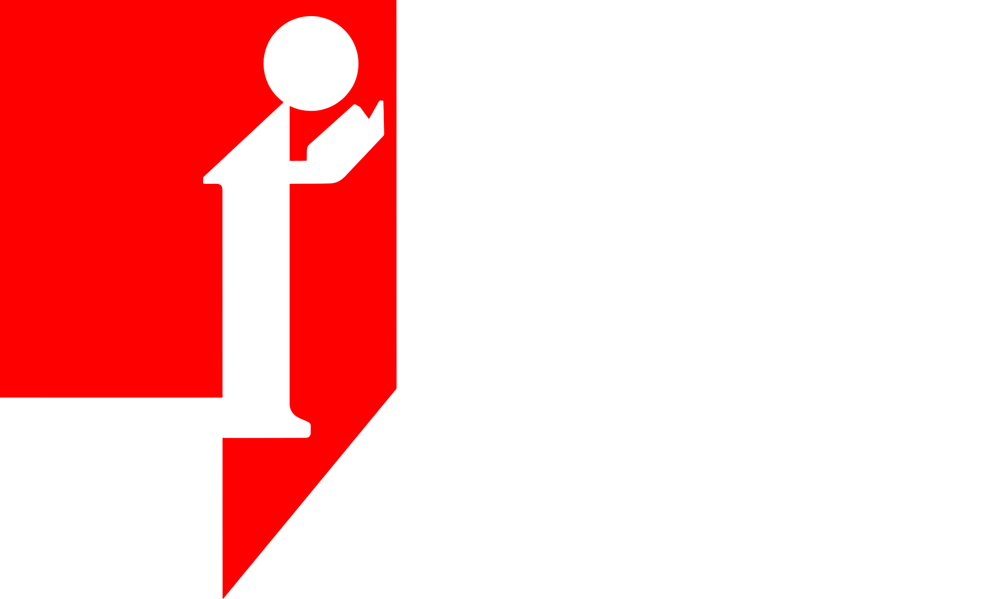
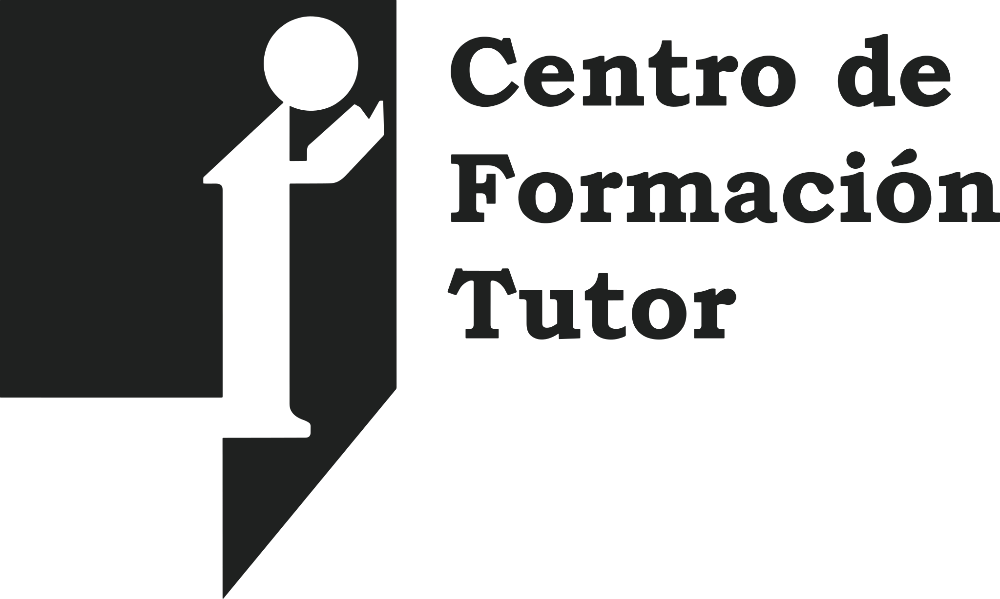
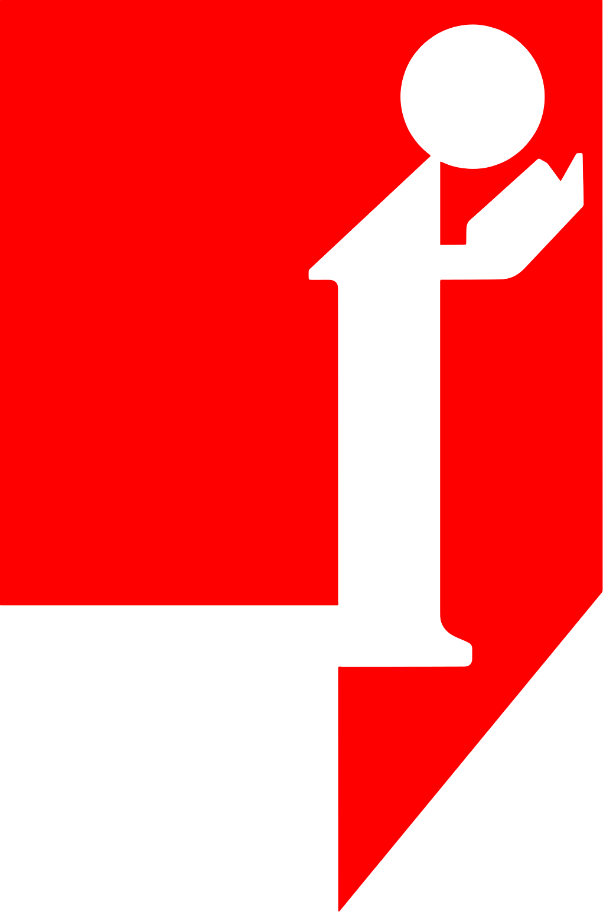

¿Cuánto hablaste en tu última clase de inglés?
Your turn.
Comenta NIVEL y te mando la pruebaManual de identidad visual · v1
Take the floor.
Cómo se ve, se mueve y habla el Centro de Formación Tutor. Todo sale de su logo: un bocadillo de diálogo con alguien que toma la palabra adentro.

No había manual ni referencias: había un logo con tres decisiones claras. El sistema no inventa, rescata. Toca cada parte.


Toma la palabra. Take the floor.
Es el concepto, el nombre del método (seis pasos, uno de ellos es pasar al frente) y el cierre de cada pieza.
Adolescentes de bachillerato y sus padres, adultos que trabajan y empresas del Valle del Cauca.
«Llevo años estudiando inglés y me bloqueo cuando tengo que hablar.»
Cada clase termina contigo hablando.
Titulares cortos en Clarendon pesada · un solo botón por vista · la prueba de nivel a la mano.
Personas reales hablando y riendo · tuteo · el inglés se oye al tocarlo.
Escalera A1–C1 con lo que se logra · corrección clara de tus errores · horas de referencia honestas.
«Inglés en 3 meses» · «aprende sin gramática» · «nivel nativo» · «te damos un título».
Redibujado en vector desde el original, sin cambiar forma ni color. El rojo del logo es #FF0000 y no se altera.




La unidad x es el diámetro de la cabeza de la figura. Alrededor del logo queda libre, como mínimo, 1 x por cada lado: nada entra ahí.
La cola baja a 50°. Ese ángulo es el de todas las diagonales del sistema: cortes de sección, barridos, flechas de botón.
Tamaño mínimo: logo completo 120 px de ancho en pantalla (25 mm impreso); solo el símbolo, 16 px (6 mm). Por debajo de eso, usar el símbolo sin el nombre.
Una paleta corta, como el logo. El rojo va en planos grandes; la tinta, en el texto; el papel deja respirar. Toca un color para copiarlo.
| Texto / fondo | Contraste | Uso |
|---|
Del rosado al vino: el rojo se intensifica a medida que subes. Solo para niveles A1–C1.
Aa
Black 900 · ExtraBold 800 · Bold 700
Italic: el inglés siempre en cursiva.
Clarendon de caja alta, la pariente libre más cercana a la letra del logo. Google Fonts, licencia OFL.
Aa
Bold 700 · Semibold 600 · Regular 400
Párrafos, datos, botones y etiquetas EN VERSALITAS con tracking.
Grotesca contemporánea, clara en pantalla chica. Google Fonts, licencia OFL. Prueba: ñ Ñ á é í ó ú ü ¿ ¡ « »
DisplayToma
H1la palabra.
H2Seis pasos, 120 minutos.
InglésMay I have the floor?
TextoCada clase termina contigo al frente, hablando.
EtiquetaNiveles del Marco Común Europeo

Fotos, citas y tarjetas van dentro de la silueta del logo, con la cola abajo a la derecha.
Cortes de sección, barridos y transiciones van a 50°, nunca en vertical recto.
El inglés vive en burbujas que se pueden tocar y escuchar. Tinta, hueso o rojo.
Los niveles como escalones que crecen y se oscurecen. La figura se para en el tuyo.
La persona del atril, sola, marca dónde estás: en la escalera, en un mapa, junto a un dato.
El botón principal también es un bocadillo. Uno solo relleno por vista.

Sí
No
Rápido para entrar, suave para asentarse. Con «reducir movimiento» activado, todo aparece sin desplazarse.
El bocadillo crece desde la punta, con resorte (520 ms).
May I have the floor?
El inglés entra como dicho en voz alta.
Las transiciones cruzan en la diagonal de la cola.
Se entra a la escena por la silueta de la persona.
| Situación | Así sí | Así no |
|---|---|---|
| Titular | Toma la palabra. | ¡Aprende inglés fácil y rápido! |
| Promesa | Cada clase termina contigo al frente, hablando. | Habla inglés en 3 meses garantizado. |
| Gramática | La vemos a partir de lo que tú dijiste. | Olvídate de la gramática. |
| Certificados | Te preparamos para el examen de tu nivel. | Te certificamos B2 internacional. |
| Llamado en Instagram | Comenta NIVEL y te mando la prueba. | Síguenos para más · link en la bio. |
Tuteamos a todos. Frases cortas. El inglés en cursiva y, cuando se pueda, con su sonido.
Your turn.
Comenta NIVEL y te mando la pruebaNombre ApellidoCoordinación académica
300 000 0000 · correo por confirmar